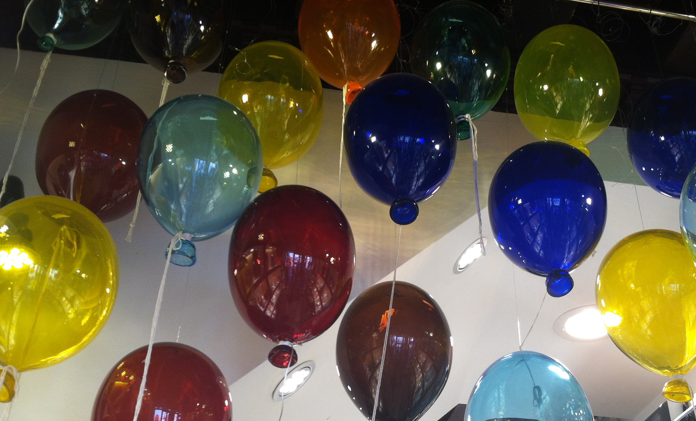

The Murano Glass Museum

Basic Facts about the Murano Glass Museum:
The Murano Glass Museum allows visitors to watch first-hand how they create the Murano Glass and sculpt them into objects. They allow you to choose what you would like them to make, and they make it in front of you in less than 30 seconds!
This museum also provides a shop where you can buy any product of theirs, which make for amazing gifts. There is a variety of choices from drinking glasses, to jewelry, to balloons.
With Murano Glass being one of Venice's most noted associations, it would be wise to take advantage of the Murano Glass Museum!